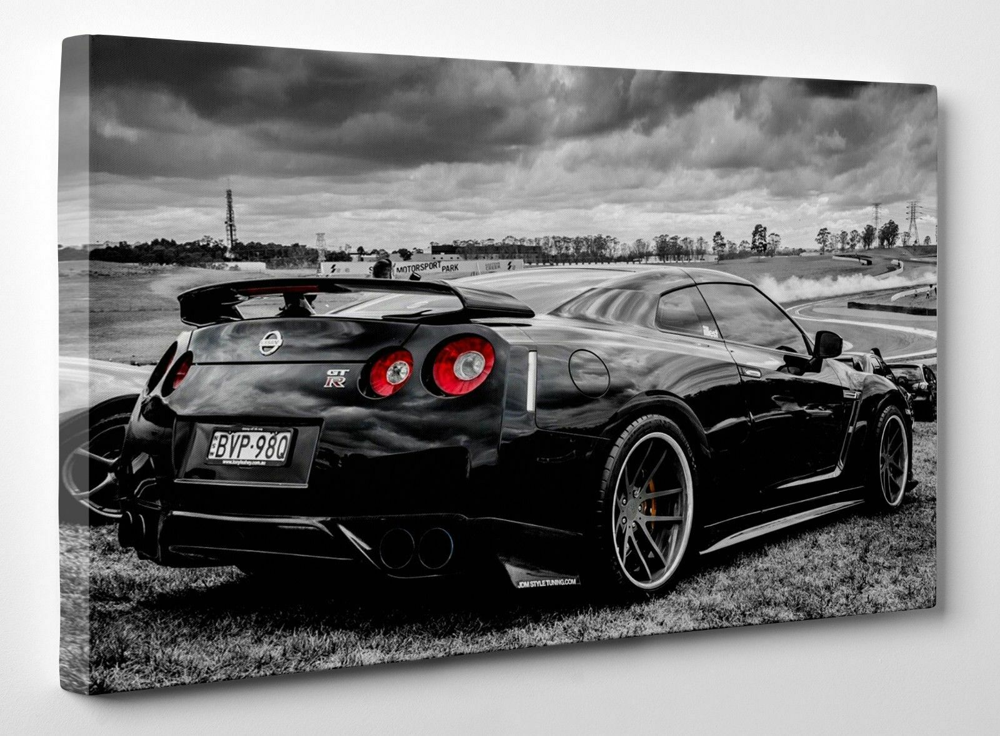

The Nissan GT-R is a high-performance sports car and grand tourer produced by Nissan, which was unveiled in 2007. It is the successor to the Skyline GT-R, although no longer part of the Skyline range itself, that name now being used for Nissan's luxury-sport market.
